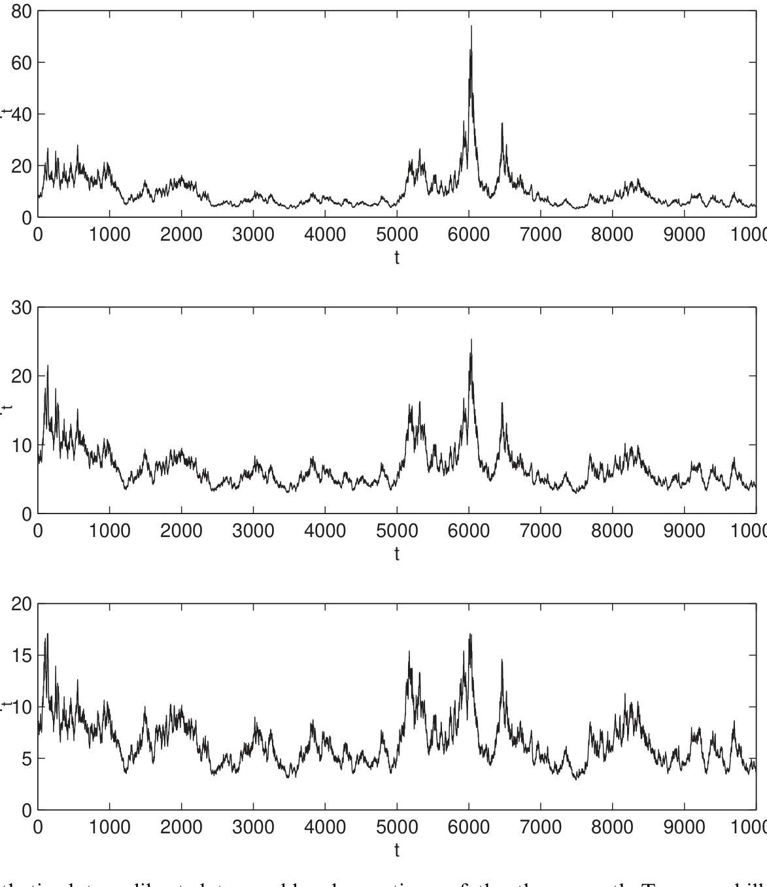
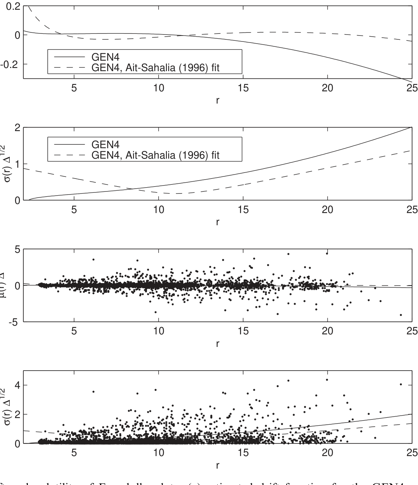
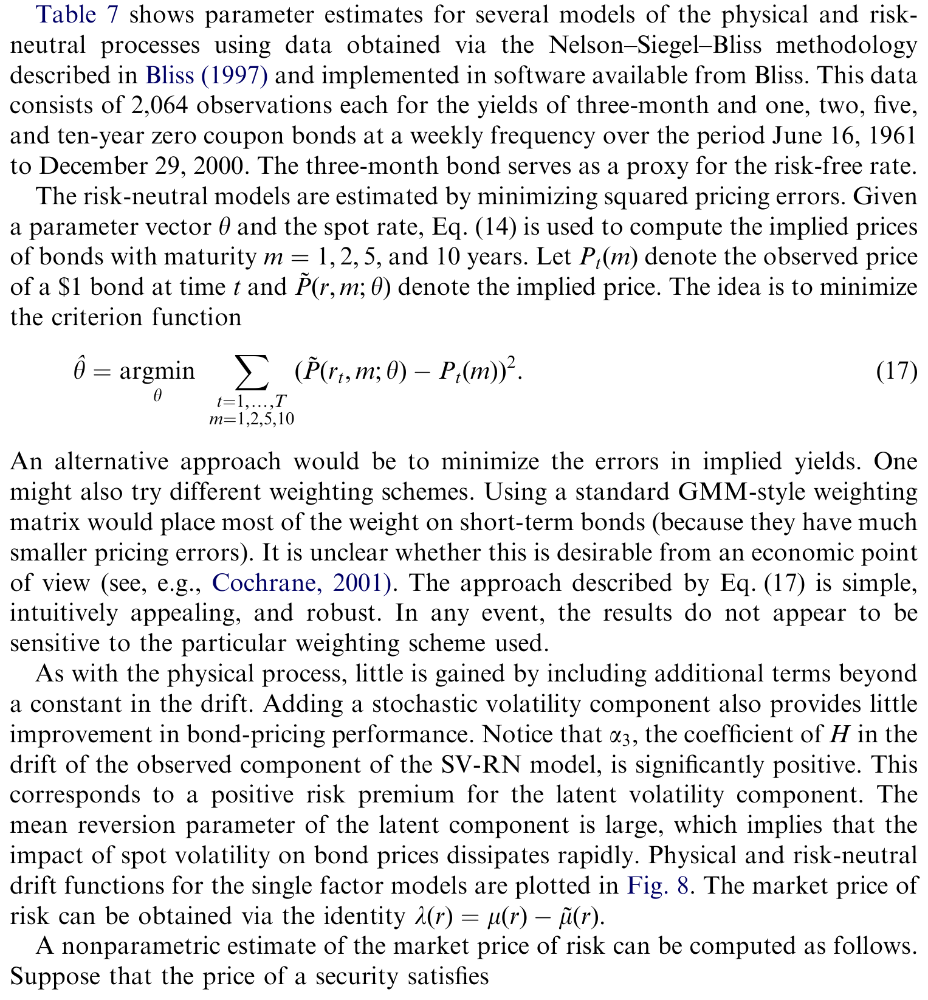
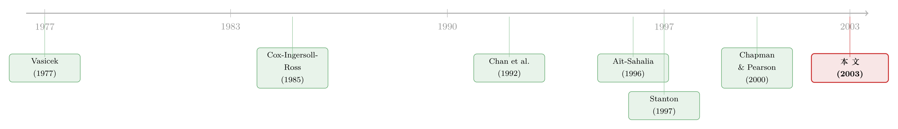

盯着漂移看了十年，真正说了算的却是波动率
本文读的是 Durham (2003, Journal of Financial Economics)：用模拟极大似然把一整套短期利率的连续时间模型逐一对账后，作者发现——短率建模的胜负手不是大家争了十年的「漂移是否非线性」，而是波动率的设定；常数漂移就已足够，所谓的平稳性其实是「波动率诱导」出来的。
1 一个争了十年的问题
先把场景摆出来。短期利率（short-term interest rate）大概是整个固定收益领域里被研究得最透的一个变量了：它是贴现的起点，是利率期限结构的锚，几乎每一个债券与衍生品定价模型都要先假设它服从某个随机微分方程 (stochastic differential equation, SDE)。可偏偏就是这么一个被反复咀嚼的对象，有一个最基本的问题，吵了十年都没吵明白——
短率的漂移 (drift) 到底是不是非线性的？
通俗点说，就是：当利率偏离它的「长期均值」时，它往回拉的力道，是像弹簧那样匀速（线性）地拉，还是在两端会突然变猛（非线性）？这个问题听上去技术，却牵动着一件大事：利率会不会跑到天上去、会不会塌到零、整个过程是不是平稳 (stationary) 的，似乎全压在漂移这一项上。
于是文献的主线，从一开始就钉死在了漂移上。而且，主流的答案是「非线性」。Aït-Sahalia (1996) 用非参数方法比较模型隐含密度与经验密度，找到了「漂移非线性」的强证据；Stanton (1997) 用非参数估计漂移与扩散，也看到了显著的非线性；Tauchen (1995)、Conley et al. (1997) 用矩方法，同样为非线性背书。一时间，「短率漂移在高利率区为负、低利率区为正、中间几乎为零」这条 S 形曲线，几乎成了共识。
接着，一个自然的问题是：这些结论可靠吗？
裂缝很快出现了。Pritsker (1998) 发现 Aït-Sahalia 那套设定检验会过度拒绝真模型，一旦把检验的 size 校正回来，它几乎没有 power；Chapman and Pearson (2000) 更直接地指出，Aït-Sahalia (1996) 和 Stanton (1997) 用的那些估计量，在小样本下天生就「爱无中生有地找到非线性」；Jones (2003b) 用贝叶斯方法绕了一圈，结论是——你找不找得到非线性，很大程度上取决于你用了什么先验。
这就是 Durham 接手时的局面：一地鸡毛。所有人都在盯着漂移，但谁也没法把话说死。而真正麻烦的，是方法本身——
2 似然才是那把「最优」的尺子
为什么这个问题这么难？因为大家用的尺子都不够好。
统计学里有一个几乎是「天条」的结论：在正则条件下，极大似然估计 (maximum likelihood estimation, MLE) 是渐近有效的，似然比检验 (likelihood ratio test, LR) 有一系列最优性质。换句话说，如果你能写出似然函数，你就该用它，别的矩方法、非参数方法都是退而求其次。
可问题恰恰在这里：对连续时间扩散过程，离散观测下的转移密度 (transition density) 几乎没有闭式解，似然函数你根本写不出来。所以过去二十年，大家被迫绕道——Chan et al. (1992) 用广义矩 (GMM)、Tauchen (1995) 与 Gallant and Tauchen (1998) 用有效矩方法 (EMM)、Aït-Sahalia (1996) 和 Stanton (1997) 用非参数密度。这些方法各有各的偏误，也各有各的「盲点」。
一个被反复提到的盲点是：Tauchen (1995) 和 Conley et al. (1997) 都发现，他们的准则函数在波动率指数 \(\beta_2\) 这个方向上是「平」的——也就是说，他们根本估不准波动率到底有多陡。这一点，后面会成为整篇文章的转折点。
那 Durham 凭什么能把似然算出来？他用的是 Durham and Gallant (2002) 的模拟极大似然 (simulated maximum likelihood, SMLE)。核心思路是 Pedersen (1995) 与 Santa-Clara (1995) 提出的：既然两个相邻观测点之间，过程走过的中间状态看不见，那就把这些看不见的中间态用模拟「积分」掉，从而逼近真实的转移密度。这个想法直觉上极美，但早期实现慢得让人却步。Durham and Gallant (2002) 在数值技巧上做了大量加速，使得对 \(N=10{,}000\) 个观测、误差可忽略的对数似然，在一台 750 MHz 的 PC 上大约一秒就能算完。
有了这把尺子，Durham 做了一件此前没人能做的事：把所有候选模型嵌套进同一个最大模型里，用 LR、AIC、SC 逐一对账、排座次。这种「老老实实做嵌套序列检验」的做法，在别的领域稀松平常，可在短率这个被非参数和矩方法统治的角落里，竟是头一回。
（关于「换一把更准的尺子，老问题就翻案」这件事，本博客已有不少例子，比如 《波动率到底藏在哪里？》 与 《残差不会撒谎：一把能戳穿利率模型的「万能尺」》。）
3 模型：从一个 SDE 长出一棵嵌套树
先把建模的对象写清楚。所有标量模型都写成如下一般形式：
$$dX = \mu(X;\theta)\,dt + \sigma(X;\theta)\,dW$$
其中 \(X\) 是短率，\(\mu\) 是漂移，\(\sigma\) 是扩散（波动率），\(W\) 是标准布朗运动。整篇文章的「物种」，就是给 \(\mu\) 和 \(\sigma\) 填不同的函数形式。
Durham 把它们组织成一棵嵌套树（见 Table 1）。树根是 Aït-Sahalia (1996) 的偏好模型，作者记作 GEN4，它把漂移和波动率都开到最灵活：
从这棵树往下剪枝，就得到了所有人争论过的那些模型：
- AFF（仿射模型）：\(dX = (\alpha_1+\alpha_2 X)\,dt + (\beta_1+\beta_2 X)^{1/2}\,dW\)。它把 Vasicek (1977) 与 Cox–Ingersoll–Ross (1985) 都收作特例——这是为分析便利而生、却众所周知拟合很差的一族。
- CEV 族：把波动率限定为常弹性形式 (constant elasticity of volatility) \(\sigma(X)=\beta_1 X^{\beta_2}\)，漂移分别取常数、线性、四参数：
$$\text{CEV1}: dX = \alpha_1\,dt + \beta_1 X^{\beta_2}\,dW$$ $$\text{CEV2}: dX = (\alpha_1+\alpha_2 X)\,dt + \beta_1 X^{\beta_2}\,dW$$ $$\text{CEV4}: dX = (\alpha_1+\alpha_2 X+\alpha_3 X^2+\alpha_4/X)\,dt + \beta_1 X^{\beta_2}\,dW$$
- GEN 族：波动率换成 GEN4 里那种更灵活的形式，漂移同样取常数 / 线性 / 四参数，记作 GEN1 / GEN2 / GEN4。
这棵树的妙处在于：横着看，是「漂移越来越复杂」；竖着看，是「波动率从 CEV 升级到 GEN」。于是「到底是漂移重要还是波动率重要」这个问题，第一次可以被一组干净的似然比检验正面回答。
4 反转：常数漂移就够了，波动率才是命门
先看第一份数据：Gallant and Tauchen (1998) 用过的三个月国债（Treasury bill）周频数据，1,809 个观测，1962 年 1 月到 1996 年 8 月。
结果（Table 2）几乎是一记响亮的耳光：
- 仿射模型 AFF 的对数似然只有
417.15，被压倒性地拒绝——CIR和Vasicek一起陪葬。 - 在 CEV 族里，漂移最简单的 CEV1（常数漂移）反而被 AIC、SC、LR 三个准则一致偏好，胜过更复杂的 CEV2、CEV4。
- 从 CEV1（logL =
511.86）一路加项加到 GEN4（logL =514.26），五个额外参数只换来约2.4点的对数似然增长——LR 检验远不显著（df 较大时 ½χ² 的 95% 临界值已是 4.75 量级）。
换句话说：把漂移从「一个常数」升级到「文献里那条华丽的 S 形非线性」，几乎什么都没买到。
这与 Aït-Sahalia (1996) 用不同数据、不同方法得到的「强烈支持最大模型 GEN4」形成了刺眼的反差。Durham 甚至顺手做了个蒙特卡洛，确认 Chapman and Pearson (2000) 说的那种「小样本偏向于找到非线性」的毛病，在似然框架下也确实存在一点点——但即便不去校正它，证据也根本不站在非线性那一边。
那波动率呢？这才是反转真正落地的地方。在所有波动率指数 \(\beta_2\) 自由的模型里，Durham 都能把这个指数估得很准：CEV 设定下 \(\beta_2 = 1.45\)，标准误只有 0.02，而且对漂移设定的选择极其稳健。这个数几乎正中 Chan et al. (1992) 当年主张的 1.5。回想一下第 2 节那个伏笔——Tauchen (1995)、Conley et al. (1997) 在这个方向上准则函数「平得估不动」，而似然方法一上场，参数立刻清晰起来。这正是似然相对效率的一次漂亮示范。
为了让「漂移无关紧要」这件事更直观，作者用 CEV1、CEV2、CEV4 各自生成了相当于约 200 年（\(N=10{,}000\)）的合成短率路径。三条路径在历史数据覆盖的利率区间里几乎长得一模一样，唯一的差别只出现在「利率冲到 20% 以上」这种现实中几乎从未发生、因而数据无从置喙的罕见事件里。你选哪个漂移，本质上不是在拟合数据，而是在表达你的先验信念。

Figure 3: Synthetic data calibrated to weekly observations of the three-month Treasury bill rate, N¼
到这里，故事似乎可以收尾了：常数漂移 + CEV 波动率，简洁又好用。但真正关键的一步，是把同一套方法搬到日频数据上。
5 当 CEV 在日频数据上崩掉
第二份数据是 Stanton (1997) 用过的三个月国债日频数据，7,555 个观测。漂移那边的结论原封不动：常数就够，加项无益。可波动率这边，画风突变——
CEV 不行了。 从 CEV1（logL = 7766.55）升级到波动率更灵活的 GEN1（logL = 7813.79），那两个额外的波动率参数一口气买来将近 50 点的对数似然。这在周频数据上还几乎可以忽略的差距，到了日频就成了天堑。
为什么？Durham 给出的解释很物理：CEV 的波动率被强行约束成「利率趋零时波动率也趋零」，可日频数据偏偏在低利率区呈现出相当高的波动；CEV 为了去够低端那条曲线，就不得不在高端把曲率压得太平，顾此失彼。GEN 那种两端都能自由翘起的形式，才接得住。
于是结论的轮廓彻底清晰了：漂移的设定基本无关紧要，波动率的设定才是模型的命门。CEV 在周频国债上「好得惊人」，却在两份日频数据上被更灵活的波动率设定干净利落地拒绝。同一族模型，频率一换，胜负就翻盘——这本身就说明，决定成败的从来不是漂移那条曲线，而是你给波动率留了多少自由度。
还有一个副产品值得一提。第三份数据是 Aït-Sahalia (1996) 的七天欧洲美元（Eurodollar）日频利率，5,505 个观测。Durham 发现这批数据「噪声极大」，波动率大约是两份国债数据的两倍，多半不是真实短率的可靠代理。这一点呼应了 Chapman et al. (1999) 的警告：你拿什么利率当「短率」的代理，是会出大事的。

Figure 7: Drift and volatility of Eurodollar data: (a) estimated drift function for the GEN4 model; (b)
别误读这里的「漂移无关紧要」。它说的是：在估计与拟合短率的物理过程时，漂移的函数形式贡献甚微，而不是说漂移在经济上无意义。下一节会看到，漂移之所以「不需要」往回拉，恰恰是因为波动率替它干了活——这是一种更深的关联，而非漂移真的消失了。
6 平稳性，原来是波动率「诱导」出来的
文献里一直有个让人犯迷糊的地方：常数漂移，看上去不就意味着利率没有均值回复、于是非平稳、于是会随机游走到天涯海角吗？
Durham 说：不对。对 Table 2 里估出来的 CEV1，可以证明它其实是平稳的，而平稳性是波动率诱导（volatility-induced）出来的。直觉是这样的：
在没有漂移的情况下，波动率会把过程往下推。需要一个微小的正漂移，才能阻止过程塌缩到零。而对更高的利率水平，波动率效应占主导，此时模型呈现零漂移、正漂移还是负漂移，几乎没有区别。
这正是为什么「漂移要不要非线性」这个问题，被问错了方向。文献以为是漂移在两端把利率往回拉，可在 CEV/GEN 这类波动率随利率上升而急剧放大的设定里，真正在高利率区把过程「拽回来」的，是波动率本身。标量扩散平稳性的充分条件是现成的（Karatzas and Shreve, 1991, 习题 5.40）：以 CEV2、\(\beta_2>1\) 为例，只要 \(\alpha_1>0\) 就足够了，而对 \(\alpha_2\) 没有任何限制。
所以那条被无数论文画出来的 S 形漂移——低利率为正、高利率为负——Durham 也确实拟合出了形状相似的曲线（与 Aït-Sahalia 1996、Stanton 1997、Ahn and Gao 1999 等如出一辙）。但他对它的解读完全不同：这条曲线在统计上并不显著，把 \(r_{t+\Delta}-r_t\) 对 \(r_t\) 的散点图铺在底下，你会看到无论用哪种设定，估出来的漂移本质上都贴着零线。形状的相似，不等于证据的支持。
（这条「非线性漂移其实是个统计幻象」的暗线，本博客另有专文细讲，参见 《利率会不会「拐弯」？》 与 《数据从没越过那两条线，利率的漂移却「凭空」弯了》。）
7 加一个随机波动率因子：似然暴涨，债券价格纹丝不动
故事到这里还有最后一层。短率（和许多金融时间序列一样）有肥尾、有波动持续性，这些是单因子扩散无论如何也装不下的（Ghysels et al., 1996）。所以 Durham 又把方法推进到随机波动率 (stochastic volatility, SV) 模型：
$$dX = \mu_X(X)\,dt + \sigma_X(X)\exp(H)\,dW_1$$ $$dH = \mu_H(H)\,dt + \sigma_H(H)\,dW_2$$
这里多出来一个看不见的潜在波动率因子 \(H\)，它自己也服从一个扩散。Durham and Gallant (2002) 的模拟方法恰好能把这种带潜变量的似然也近似出来——而且一个顺手的好处是，估计过程会顺带吐出点波动率（spot volatility）的估计，这在给债券定价时极其方便。（用「另一种语言」去追那个看不见的波动率，本博客也评过类似思路，见 《看不见的波动率，换一种「语言」就追到了》。）
结果呢？两件事，一喜一忧：
- 喜：引入 SV 因子，物理过程的似然出现「巨大跳升」。对短率动态的刻画，SV 确实重要。而且关于漂移的老结论原封不动——风险中性过程的漂移里，同样找不到任何超出常数项的证据。值得一提的是，与 Andersen and Lund (1997) 不同，Durham 发现加入 SV 因子后，波动率弹性的估计并没有显著改变。
- 忧：把这些模型搬去给一年、两年、五年、十年期债券定价（通过最小化均方定价误差来估风险中性模型），SV 因子对债券定价表现的改善却微乎其微。

Table 7: shows parameter estimates for several models of the physical and risk-
这是一个相当冷静的结论：随机波动率对建模短率本身当然重要，对那些更像期权、更依赖波动率的固定收益证券大概也会重要；但要解释普通债券的价格，它用处有限。债券价格主要由利率的「水平」与「期望路径」驱动，对波动率因子的二阶细节并不敏感。
8 文献脉络
把这条线捋一捋，会看到一个很典型的「方法驱动认识论」的故事。
最早是 Vasicek (1977) 和 Cox–Ingersoll–Ross (1985)，用解析上极其友好的仿射模型给短率立了规矩——线性漂移、简单波动率，漂亮但拟合糟糕。接着 Chan et al. (1992) 用 GMM 做了第一次系统的横向比较，提出 CEV 框架，并主张波动率弹性约为 1.5、均值回复参数不显著——这其实已经隐隐指向「波动率才是关键」，可惜被随后的浪潮盖过了。

真正把注意力全引向漂移的，是 Aït-Sahalia (1996) 与 Stanton (1997)：非参数方法看到了漂移的强非线性，「S 形漂移」成了一代共识，Tauchen (1995)、Conley et al. (1997) 也以矩方法相呼应。然后是反思期：Pritsker (1998)、Chapman and Pearson (2000)、Jones (2003b) 接连指出这些非参数/矩估计在小样本下「爱无中生有」，把共识重新打成了悬案。
Durham (2003) 站的位置，是给这桩悬案带来了那把「本该一开始就用」的尺子——基于 Durham and Gallant (2002) 的模拟极大似然。它的贡献不在于发明了某个新模型，而在于第一次让短率的全套嵌套模型可以用最优的似然方法逐一对账，从而把争论的焦点从漂移整体搬到了波动率。
9 评论与延伸（Q&A + 研究方向）
(a) 几个可能的疑问
Q：Durham 说漂移非线性不显著，可他自己也拟合出了那条 S 形曲线——这不矛盾吗？
不矛盾。他拟合出的漂移形状确实和文献相似（低正高负），但 LR 检验告诉他这条曲线在统计上与「常数漂移」无法区分。形状是一回事，显著性是另一回事。把 \(r_{t+\Delta}-r_t\) 对 \(r_t\) 的散点铺在底下，会看到估计漂移基本贴着零线——视觉上的弯曲被数据的噪声完全淹没。
Q：常数漂移不就意味着非平稳、利率会跑飞吗？
这正是文献的误解。对 CEV1，平稳性是「波动率诱导」的：波动率随利率上升而急剧放大，在高利率区把过程拽回来，扮演了通常以为是漂移在扮演的角色。Karatzas–Shreve 给出的充分条件是，CEV2 在 \(\beta_2>1\) 时只需 \(\alpha_1>0\)，对线性项 \(\alpha_2\) 毫无限制。
Q：为什么 CEV 在周频国债上「好得惊人」，到日频就崩了？
因为 CEV 的波动率被约束成「利率趋零时趋零」。周频数据看不太出问题，但日频数据在低利率区有相当高的波动，CEV 为了去够低端就把高端曲率压平，顾此失彼。更灵活的 GEN 设定一上场，对数似然就涨了近 50 点。这说明胜负手在波动率的函数形式，而非漂移。
Q：欧洲美元数据为什么「不可信」？
它的波动率大约是两份国债数据的两倍，噪声过大，多半不是真实短率的干净代理。这对普通债券定价也许影响不大，但对依赖短率波动率的证券会很要命——也再次提醒：短率「代理」的选择本身就是一个会出错的决策（Chapman et al., 1999）。
Q：既然随机波动率让物理过程似然暴涨，为什么对债券定价几乎没帮助？
因为债券价格主要由利率水平与期望路径决定，对波动率因子的细节不敏感。SV 刻画的是短率的二阶动态（波动率聚集、肥尾），这些对更「期权化」的证券重要，但普通债券的现值对它们近乎免疫。
Q：这和 Andersen and Lund (1997) 的结论冲突在哪？
Andersen–Lund 发现加入 SV 因子会显著改变估计的波动率弹性；Durham 用似然方法做，却发现弹性基本不变。差别多半来自估计方法（EMM vs. SMLE）与识别力的不同——这恰恰是 Durham 想强调的「似然更有效」的又一处体现。
(b) 几个可能的研究问题与提案
1. 把「波动率才是命门」搬到公司债的短端利差。 【经济故事】短率研究的核心教训是：决定模型成败的是波动率而非漂移的均值回复。公司债的信用利差短端同样有人争论「均值回复 vs. 随机游走」，但很可能波动率设定（尤其是利差趋零时的行为）才是关键。【可行性】中。需要 TRACE 的高频成交价构造日频/周频利差序列，配合 Durham–Gallant 的 SMLE。难点在利差的非交易日与流动性噪声，需先做流动性过滤。
2. 用 SMLE 重估「外资持有人」冲击下的短率/利差波动率。 【经济故事】若波动率（而非漂移）是利率动态的主导，那么外资大规模进出新兴市场短端时，应主要表现为波动率制度的切换，而非均值水平的漂移。【可行性】中偏低。需要分国别的短端利率 + 外资持仓流量（如 EPFR / 托管数据），识别上要把全球波动率冲击与本地外资流分开，内生性较强。
3. SV 的点波动率估计，能不能预测公司债流动性危机？ 【经济故事】Durham 方法顺带产出 spot volatility 的估计。短率的潜在波动率因子若领先于信用市场的「流动性枯竭」，就提供了一个无需期权数据的预警指标。【可行性】高。数据现成（国债短率 + TRACE 流动性度量如 Roll/Amihud），可做样本外预测回归与事件窗（如 2020 年 3 月，参见 《差点死掉的那个市场》）。
4. 频率敏感性的系统化：同一模型，从日频到月频，结论会怎么翻？ 【经济故事】本文最耐人寻味的发现之一是 CEV 在周频上好、日频上崩。把采样频率作为连续旋钮，系统刻画「漂移/波动率重要性」如何随频率移动，能厘清究竟有多少结论是采样频率的赝象（参见 《一秒一笔的数据，为什么只敢拿 5 分钟用一次？》）。【可行性】高。纯方法论 + 现有数据即可，蒙特卡洛 + 实证两条腿走路。
参考文献
- Aït-Sahalia, Y. (1996). Testing continuous-time models of the spot interest rate. Review of Financial Studies 9(2), 385–426.
- Andersen, T.G., Lund, J. (1997). Estimating continuous-time stochastic volatility models of the short-term interest rate. Journal of Econometrics 77(2), 343–377.
- Chan, K.C., Karolyi, G.A., Longstaff, F.A., Sanders, A.B. (1992). An empirical comparison of alternative models of the short-term interest rate. Journal of Finance 47(3), 1209–1227.
- Chapman, D.A., Pearson, N.D. (2000). Is the short-rate drift actually nonlinear? Journal of Finance 55(1), 355–388.
- Conley, T.G., Hansen, L.P., Luttmer, E.G.J., Scheinkman, J.A. (1997). Short-term interest rates as subordinated diffusions. Review of Financial Studies 10(3), 525–577.
- Cox, J.C., Ingersoll, J.E., Ross, S.A. (1985). A theory of the term structure of interest rates. Econometrica 53(2), 385–407.
- Durham, G.B. (2003). Likelihood-based specification analysis of continuous-time models of the short-term interest rate. Journal of Financial Economics 70(3), 463–487.
- Durham, G.B., Gallant, A.R. (2002). Numerical techniques for simulated maximum likelihood estimation of stochastic differential equations. Journal of Business and Economic Statistics 20(3), 297–316.
- Pedersen, A.R. (1995). A new approach to maximum likelihood estimation for stochastic differential equations based on discrete observations. Scandinavian Journal of Statistics 22(1), 55–71.
- Pritsker, M. (1998). Nonparametric density estimation and tests of continuous time interest rate models. Review of Financial Studies 11(3), 449–487.
- Stanton, R. (1997). A nonparametric model of term structure dynamics and the market price of interest rate risk. Journal of Finance 52(5), 1973–2002.
- Tauchen, G.E. (1995). New minimum chi-square methods in empirical finance. In Wallace, K., Kreps, D. (Eds.), Advances in Econometrics. Cambridge University Press.
- Vasicek, O. (1977). An equilibrium characterization of the term structure. Journal of Financial Economics 5(2), 177–188.